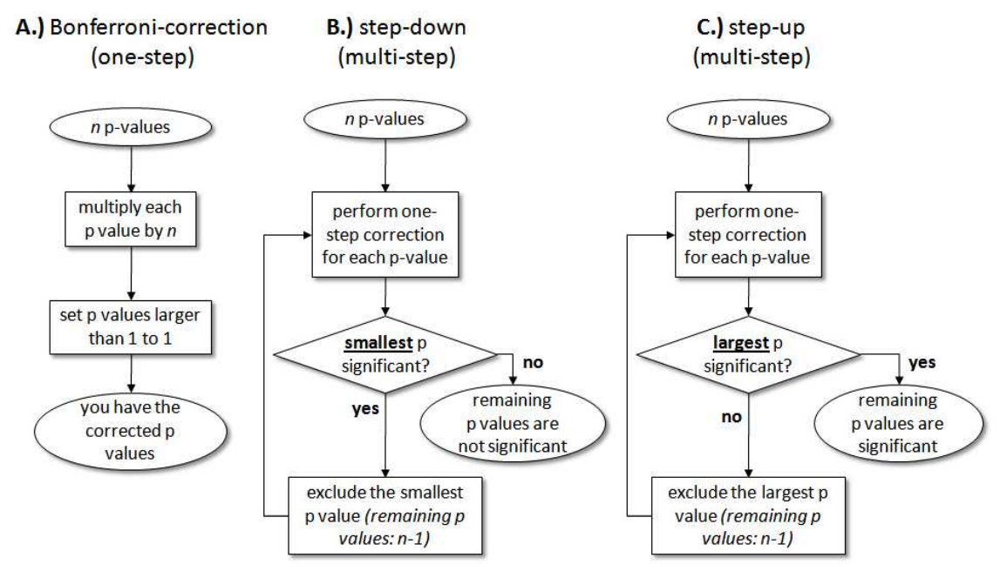
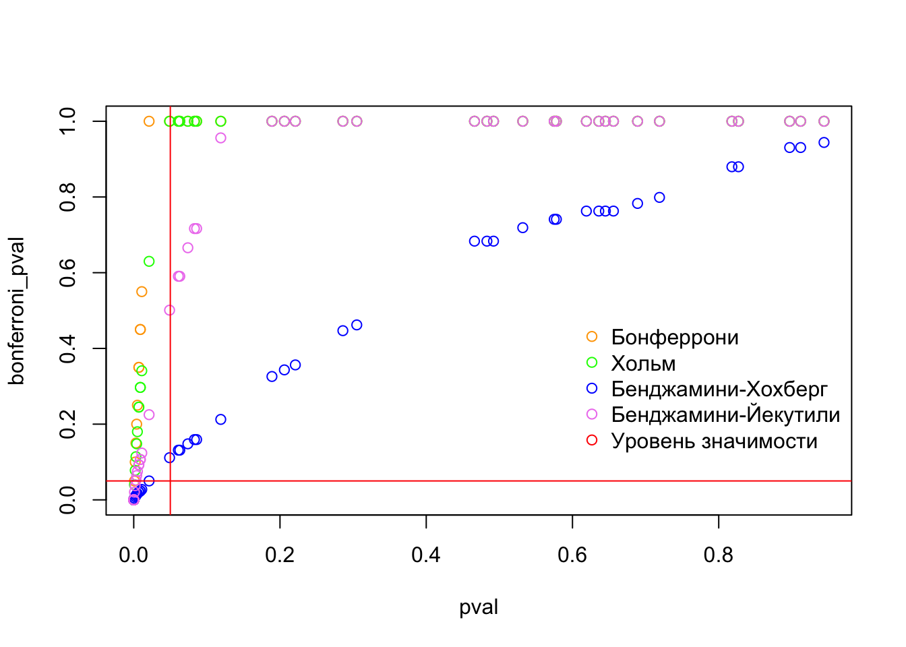

2 Множественное тестирование гипотез
2.1 Проблема множественного тестирования гипотез
Ваш исследовательский вопрос может быть таким, что вам интересно оценить воздействия разных типов тритмента, то есть у вас есть несколько экспериментальных групп и одна контрольная. При такой постановке мы хотим проверить не одну, а сразу много статистических гипотез о различии в группах. При проверке любой гипотезы существует вероятность совершить ошибку первого рода (отклонить нулевую гипотезу, если она верна = обнаружить эффект, которого нет). Особенность множественного тестирования гипотез состоит в том, что чем больше гипотез мы проверяем на одних и тех же данных, тем больше будет вероятность допустить как минимум одну ошибку первого рода – эффект множественных сравнений (multiple comparisons/testing).
Источниками множественного тестирования могут быть:
Несколько типов воздействия (Multiple treatment arms)
Гетерогенное воздействие (Heterogeneous treatment effects)
Несколько способов оценки (Multiple estimators)
Несколько зависимых переменных (Multiple outcomes), эффект на которые мы хотим оценить
Рассмотрим это на примере. Предположим, что у нас есть 3 группы (A, B и С), в которых мы хотим сравнить среднее значение переменной интереса. Как и ранее, мы будем использовать t-тест Стьюдента. Если мы получили достаточно большое значение t-статистики такое, что p-value < 0.05, то мы отклоняем нулевую гипотезу и заключаем, что группы статистически различаются по переменной интереса. Отсечка p-value < 0.05 значит, что вероятность ошибочного вывода о различии между групповыми средними не превышает 0.05. Это будет работать именно так, когда у нас всего две группы, но в случае множественного тестирования вероятность будет больше 5%.
Выполняя тест Стьюдента, исследователь проверяет нулевую гипотезу об отсутствии разницы между двумя группами. Сравнивая группы A и В, он может ошибиться с вероятностью 5%, В и С – 5%, А и С – тоже 5%. Соответственно, вероятность ошибиться хотя бы в одном из этих трех сравнений составит:
\(P = 1 - \left(1-\alpha \right)^n = 1 - 0.95^3 \approx 0.14 > 0.05\) – такая ошибка называется family-wise error rate
Если бы групп было бы 5:
\(P = 1 - \left(1-\alpha \right)^n = 1 - 0.95^{10} \approx 0.4 > 0.05\)
К счастью, существует несколько методов, позволяющих преодолеть эту сложность:
Корректировка p-value (p-value adjustments)
Планирование эксперимента и фиксирование его условий (pre-analysis plans)
Повтороное проведение эксперимента (replication)
В рамках курса мы будем обсуждать первый способ борьбы с ошибками, возникающими при множественном тестировании гипотез.
2.2 Контроль ошибок первого и второго рода
Предположим, что мы проверяем \(n\) гипотез. Для каждой гипотезы мы будем проводить тест Стьюдента. Результаты наших тестов можно обобщить следующим образом:
| Число принятых нулевых гипотез \((p-value > \alpha) \Rightarrow \hat{\tau}=0\) | Число отвергнутых нулевых гипотез \((p-value < \alpha) \Rightarrow \hat{\tau}\neq 0\) | Всего гипотез | |
|---|---|---|---|
| Число верных нулевых гипотез \(\hat{\tau}=0\) | Число безошибочно принятых нулевых гипотез (TN, true negatives) | Число ошибочно отвергнутых нулевых гипотез (FP, false positives) – ошибка первого рода | \(m_0\) – Число верных нулевых гипотез (true null hypotheses) |
| Число неверных нулевых гипотез \(\hat{\tau}\neq 0\) | Число ошибочно принятых нулевых гипотез (FN, false negatives) – ошибка второго рода) | Число безошибочно отвергнутых нулевых гипотез (TP, true positives) | \(m-m_0\) – Число истинных альтернативных гипотез (true alternative hypotheses) |
| Всего гипотез | \(m-R\) – Общее число принятых гипотез | \(R\) – Общее число отвергнутых гипотез | \(m\) – всего гипотез |
В теории всего существует \(m_0\) верных нулевых гипотез. В результате наших тестов мы ошибочно отвергаем \(FP\) гипотез и верно принимаем остальные \(TN\) гипотез. Также существует \(m−m_0\) альтернативных гипотез, из которых \(TP\) гипотез безошибочно отвергаются, а \(FN\) гипотез – ошибочно принимаются. Важно, что общие количества отвергнутых и принятых гипотез (\(R\) и \(m-R\)), а следовательно, и суммарное число гипотез \(n\) нам известны, тогда как остальные величины (\(m_0\), \(TN\), \(FP\), \(FN\) и \(TP\)) мы не наблюдаем.
2.2.1 Групповая вероятность ошибки первого рода (family-wise error rate)
При одновременной проверке семейства статистических гипотез мы хотим, чтобы количество наших ошибок (\(FP\) и \(FN\)) было минимальным. Традиционно исследователи пытаются минимизировать величину ошибочно отвергнутых гипотез \(FP\). Это вполне логично, поскольку ложно отвергнутая нулевая гипотеза грозит нам ложноположительным найденным эффектом, которого реально может не быть.
Если \(FP \geq 1\), мы совершаем как минимум одну ошибку первого рода. Вероятность допущения такой ошибки при множественной проверке гипотез называют групповой вероятностью ошибки (familywise error rate, FWER или experiment-wise error rate). По определению, \(FWER = P(FP \geq 1)\) – вероятность ошибочно отклонить хотя бы одну нулевую гипотезу во всех тестах. Соответственно, когда мы говорим, что хотим контролировать групповую вероятность ошибки на определенном уровне значимости \(\alpha\), мы подразумеваем, что должно выполняться неравенство \(FWER \leq \alpha\).
Ниже мы обсудим методы, которые позволяют это делать.
2.2.1.1 Коррекция Бонферрони
Вернемся к нашему примеру, когда мы сравнили 3 группы A, B и C с помощью t-теста. Предположим, что мы получили следующие Р-значения: 0.001, 0.01 и 0.04.
Как было сказано выше, мы хотим, чтобы групповая вероятность ошибки была не больше уровня значимости \(FWER \leq \alpha\). Согласно методу Бонферрони, мы должны сравнить каждое из полученных p-значений не с \(\alpha\), а с \(\frac{\alpha}{n}\), где \(n\) – число проверяемых гипотез. Деление исходного уровня значимости \(\alpha\) на \(n\) – это и есть поправка Бонферрони. В рассматриваемом примере каждое из полученных p-значений необходимо было бы сравнить с \(\frac{\alpha}{n}\), например, с \(\frac{0.01}{3}\approx 0.017\).
- \(p-value_1=0.001 < \alpha_{adjusted}=0.017\) – гипотеза отклонена
- \(p-value_2=0.01 < \alpha_{adjusted}=0.017\) – гипотеза отклонена
- \(p-value_3=0.04 > \alpha_{adjusted}=0.017\) – гипотеза принята
Вместо деления уровня значимости на число гипотез, мы могли бы умножить каждое p-значение на это число и получить точно такие же выводы (эта эквивалентная процедура реалирована в R):
- \(p-value_{1,adjusted} = 0.001 \cdot 3 = 0.003 < \alpha = 0.05\) – гипотеза отклонена
- \(p-value_{2,adjusted} = 0.01 \cdot 3 = 0.03 < \alpha = 0.05\) – гипотеза отклонена
- \(p-value_{3,adjusted} = 0.04 \cdot 3 = 0.12 > \alpha = 0.05\) – гипотеза принята
Иногда при домножении p-значений результат может получиться больше единицы. Из теории вероятностей мы знаем, что вероятность не может быть больше одного, поэтому в таких случаях p-значение принимают равным за единицу.
Различные виды коррекций p-значений представлены в функции p.adjust(), выбрать тип коррекции можно с помощью аргумента method. В этой функции используется домножение исходных p-значений на количество тестируемых гипотез, а не корректировка уровня значимости.
Проверим наши рассчеты:
p.adjust(c(0.001, 0.01, 0.04), method = "bonferroni")[1] 0.003 0.030 0.120Можно на выходе сразу получить выводы относительно гипотез при \(\alpha = 5%\):
alpha <- 0.05
p.adjust(c(0.001, 0.01, 0.04), method = "bonferroni") < alpha # отклоняем H_0 (есть эффект)? [1] TRUE TRUE FALSEВажно помнить об уязвимости коррекции Бонферрони – с ростом числа гипотез мощность метода уменьшается. Чем больше гипотез мы хотим проверить, тем сложнее нам будет их отвергать (даже если они реально должны быть отвергнуты). Например, для 5 групп (10 гипотез), применение поправки Бонферрони привело бы к снижению исходного уровня значимости до 0.01/10 = 0.001. Соответственно, для отклонения гипотез, соответствующие p-значения должны быть меньше 0.001, а это довольно жесткая отсечка. Из этого делаем вывод, что при большом числе гипотез коррекцию Бонферрони лучше не использовать.
2.2.1.2 Низходящая процедура Хольма (Хольма-Бонферрони)
Метод Хольма позволяет побороть недостатки метода Бонферрони. Он устроен следующим образом:
- Сначала p-значения сортируются по возрастанию \(\displaystyle{p-value_1 \leq p-value_2 \leq ... \leq p-value_n}\).
- Затем проверяется условие для первого из p-значений: \(\displaystyle{p-value_1 \geq \frac{\alpha}{n-i+1}=\frac{\alpha}{n}}\), если условие выполнено, то все нулевые гипотезы принимаются, и процедура останавливается, иначе первая из гипотез отвергается, и начинается следующий шаг.
- На следующем шаге проверяется условие \(\displaystyle{p-value_2 \geq \frac{\alpha}{n-i+1}=\frac{\alpha}{n-1}}\), если условние выполнено, то все гипотезы, начиная со второй, принимаются, иначе первые две гипотезы отклоняются и начинается следующий шаг.
- На последнем шаге проверяется условие вида \(\displaystyle{p-value_n \geq \frac{\alpha}{n-n+1}}\), если оно выполнено, то последняя гипотеза принимается, если нет – отклоняется, на этом процедура заканчивается.
Метод Хольма называют нисходящей (step-down) процедурой. Он начинается с наименьшего p-значения в упорядоченном ряду и последовательно “спускается” вниз к более высоким значениям. На каждом шаге соответствующее значение \(p-value_i\) сравнивается со скорректированным уровнем значимости \(\displaystyle{\alpha_{adjusted}=\frac{\alpha}{n+i-1}}\). Аналогично коррекции Бонферрони можно вместо корректировки уровня значимости корректировать p-значения \(\displaystyle{p-value_{i,adjusted}=p-value_{i}\cdot(n-i+1)}\) (эта эквивалентная процедура реалирована в R). Возвращаясь к нашему примеру:
- \(p-value_{1,adjusted} = 0.001 \cdot (3-1+1) = 0.003 < \alpha = 0.01\) – гипотеза отклонена
- \(p-value_{2,adjusted} = 0.01 \cdot (3-2+1) = 0.02 > \alpha = 0.01\) – гипотеза принята
- \(p-value_{3,adjusted} = 0.04 \cdot (3-3+1) = 0.04 > \alpha = 0.01\) – гипотеза принята
А теперь проверим себя с помощью R:
p.adjust(c(0.001, 0.01, 0.04), method = "holm")[1] 0.003 0.020 0.040И результаты проверки гипотез при \(\alpha =5%\):
alpha <- 0.05
p.adjust(c(0.001, 0.01, 0.04), method = "holm") < alpha # отклоняем H_0 (есть эффект)? [1] TRUE TRUE TRUE2.2.2 Средняя доля ложных отклонений (false discovery rate)
Рассмотренные выше FWER методы обеспечивают контроль над групповой вероятностью ошибки первого рода. Как мы выяснили, эти методы чересчур жестко работают, когда нужно одновременно проверить слишком много гипотез (падает статистическая мощность).Под “недостаточной мощностью” понимается сохранение многих нулевых гипотез, которые потенциально могут представлять исследовательский интерес и которые, соответственно, следовало бы отклонить. Недостаточная мощность традиционных процедур множественной проверки гипотез привела к разработке новых методов, например, метода Бенджамини-Хохберга.
Для преодоления недостаточной мощности FWER методов был предложен новый подход к проблеме множественных проверок статистических гипотез. Суть подхода заключается в том, что вместо контроля над групповой вероятностью ошибки первого рода выполняется контроль над ожидаемой долей ложных отклонений (false discovery rate, FDR) среди всех отклоненных гипотез.
В терминах таблицы выше эта ожидаемая доля может быть записана следующим образом: \(\displaystyle{FDR=\left(\frac{FP}{R}\right)}\) (считают, что если \(R=0\), то и \(FDR=0\)). Часто можно встретить запись через мат. ожидание \(\displaystyle{FDR=\mathbb{E}\left(\frac{FP}{R}\right)}\). FDR – ожидаемая доля ложных отклоненийсреди всех отклоненных гипотез.
В отличие от уровня значимости \(\alpha\), каких-либо общепринятых значений FDR не существует. Многие исследователи по аналогии контролируют FDR на уровне 5%. Интерпретация порогового значения FDR очень проста: например, если в ходе анализа данных отклонено 1000 гипотез, то при q=0.10 ожидаемая доля ложно отклоненных гипотез не превысит 100.
2.2.2.1 Восходящая процедура Бенджамини — Хохберга
В статье (Benjamini, Hochberg, 1995) описание процедуры контроля над FDR выглядит так:
- Сначала p-значения сортируются по возрастанию \(\displaystyle{p-value_1 \leq p-value_2 \leq ... \leq p-value_n}\).
- Находят максимальное значение \(k\) среди всех индексов \(i=1,...,n\), для которого \(p-value_i \leq \frac{i}{n}q\) выполняется неравенство
- Отклоняют все гипотезы \(H_i\) с индексами \(i=1,...,k\)
Эквивалентная процедура, реалированая в R отличается тем, что вместо нахождения максимального индекса \(k\), исходные p-значения корректируются следующим образом: \(q_i=\frac{p_in}{i}\).
В качестве примера рассмотрим следующий ряд из 15 упорядоченных по возрастанию p-значений (из оригинальной статьи Benjamini and Hochberg 1995):
p.adjust(c(0.0001, 0.0004, 0.0019, 0.0095, 0.0201, 0.0278, 0.0298, 0.0344, 0.0459, 0.3240, 0.4262, 0.5719, 0.6528, 0.7590, 1.000), method = "BH") [1] 0.00150000 0.00300000 0.00950000 0.03562500 0.06030000 0.06385714
[7] 0.06385714 0.06450000 0.07650000 0.48600000 0.58118182 0.71487500
[13] 0.75323077 0.81321429 1.00000000И результаты проверки гипотез при \(\alpha =5 %\):
alpha <- 0.05
p.adjust(c(0.0001, 0.0004, 0.0019, 0.0095, 0.0201, 0.0278, 0.0298, 0.0344, 0.0459, 0.3240, 0.4262, 0.5719, 0.6528, 0.7590, 1.000), method = "BH") < alpha # отклоняем H_0 (есть эффект)? [1] TRUE TRUE TRUE TRUE FALSE FALSE FALSE FALSE FALSE FALSE FALSE FALSE
[13] FALSE FALSE FALSEИнтерпретация этих Р-значений с поправкой (в большинстве литературных источников их называют q-значениями) такова:
- Допустим, что мы хотим контролировать долю ложно отклоненных гипотез на уровне FDR = 0.05
- Все гипотезы, q-значения которых \(q-value \leq 0.05\), отклоняются
- Среди всех этих отклоненных гипотез доля отклоненных по ошибке не превышает 5%
Коррекция Р-значений по методу Беньямини-Хохберга работает особенно хорошо в ситуациях, когда необходимо принять общее решение по какому-либо вопросу при наличии информации (=проверенных гипотез) по многим параметрам.
Следует помнить, что описанный здесь метод контроля над ожидаемой долей ложных отклонений предполагает, что все тесты, при помощи которых получают p-значения, независимы. На практике в большинстве случаев это условие выполняться не будет.
2.2.2.2 Восходящая процедура Бенджамини-Йекутили
Для преодоления ограничения независимости тестов при проверке гипотез в работе (Benjamini and Yekutieli 2001) был предложен усовершенствованный метод, учитывающий наличие корреляции между проверяемыми гипотезами.
Процедура Бенджамини-Йекутили очень похожа на процедуру Бенджамини-Хохберга. Основное отличие заключается во введении поправочной константы \(\displaystyle{c_n=\sum \limits_{i=1}^{n}\frac{1}{i}}\), далее аналогично:
- Сначала p-значения сортируются по возрастанию \(\displaystyle{p-value_1 \leq p-value_2 \leq ... \leq p-value_n}\).
- Находят максимальное значение \(k\) среди всех индексов \(i=1,...,n\), для которого \(p-value_i \leq \frac{i}{n} \frac{q}{c_n}\) выполняется неравенство
- Отклоняют все гипотезы \(H_i\) с индексами \(i=1,...,k\)
В R реализуется эквивалентная процедура:
Эквивалентная процедура, реалированая в R отличается тем, что вместо нахождения максимального индекса \(k\), исходные p-значения корректируются следующим образом: \(\displaystyle{q_i=\frac{p_i\cdot n\cdot c_n}{i}}\).
p.adjust(c(0.0001, 0.0004, 0.0019, 0.0095, 0.0201, 0.0278, 0.0298, 0.0344, 0.0459, 0.3240, 0.4262, 0.5719, 0.6528, 0.7590, 1.000), method = "BY") [1] 0.004977343 0.009954687 0.031523175 0.118211908 0.200089208 0.211892623
[7] 0.211892623 0.214025770 0.253844518 1.000000000 1.000000000 1.000000000
[13] 1.000000000 1.000000000 1.000000000И результаты проверки гипотез при \(\alpha = 5%\):
alpha <- 0.05
p.adjust(c(0.0001, 0.0004, 0.0019, 0.0095, 0.0201, 0.0278, 0.0298, 0.0344, 0.0459, 0.3240, 0.4262, 0.5719, 0.6528, 0.7590, 1.000), method = "BY") < alpha # отклоняем H_0 (есть эффект)? [1] TRUE TRUE TRUE FALSE FALSE FALSE FALSE FALSE FALSE FALSE FALSE FALSE
[13] FALSE FALSE FALSE2.3 Обобщающий алгоритм для разных процедур

Источник – мне не очень нравится сам текст, но схема хорошая.
2.4 Симуляция и сравнение результатов работы разных коррекций p-value
Сравним как работают разные методы:
alpha <- 0.05
n <- 50
set.seed(123)
x <- rnorm(n, mean = c(rep(0, n/2), rep(3, n/2))) # генерим вектор t статистик
pval <- round(2*pnorm(sort(-abs(x))), 3) # переводим статистики в p-value
default_bool <- pval < alpha # вектор с исходными выводами о принятии гипотез без коррекции
bonferroni_pval <- p.adjust(pval, method = "bonferroni")
bonferroni_bool <- p.adjust(pval, method = "bonferroni") < alpha # отклоняем H_0 (есть эффект)?
holm_pval <- p.adjust(pval, method = "holm")
holm_bool <- p.adjust(pval, method = "holm") < alpha # отклоняем H_0 (есть эффект)?
bh_pval <- p.adjust(pval, method = "BH")
bh_bool <- p.adjust(pval, method = "BH") < alpha # отклоняем H_0 (есть эффект)?
by_pval <- p.adjust(pval, method = "BY")
by_bool <- p.adjust(pval, method = "BY") < alpha # отклоняем H_0 (есть эффект)?
methods <- cbind(default_bool, bonferroni_bool, holm_bool, bh_bool, by_bool) # склеиваем столбики с выводами о принятии гипотез для разных корректировок; если бы вдруг хотели склеить строчки, то есть аналогичная функция rbind()
colnames(methods) <- c('Без коррекции', 'Бонферрони', 'Хольм', 'Бенджамини-Хохберг', 'Бенджамини-Йекутили') # добавляем шапку таблицы
rownames(methods) <- c(1:n) # добавляем номера строчкам
methods Без коррекции Бонферрони Хольм Бенджамини-Хохберг Бенджамини-Йекутили
1 TRUE TRUE TRUE TRUE TRUE
2 TRUE TRUE TRUE TRUE TRUE
3 TRUE TRUE TRUE TRUE TRUE
4 TRUE TRUE TRUE TRUE TRUE
5 TRUE TRUE TRUE TRUE TRUE
6 TRUE TRUE TRUE TRUE TRUE
7 TRUE TRUE TRUE TRUE TRUE
8 TRUE TRUE TRUE TRUE TRUE
9 TRUE TRUE TRUE TRUE TRUE
10 TRUE TRUE TRUE TRUE TRUE
11 TRUE FALSE TRUE TRUE TRUE
12 TRUE FALSE FALSE TRUE TRUE
13 TRUE FALSE FALSE TRUE FALSE
14 TRUE FALSE FALSE TRUE FALSE
15 TRUE FALSE FALSE TRUE FALSE
16 TRUE FALSE FALSE TRUE FALSE
17 TRUE FALSE FALSE TRUE FALSE
18 TRUE FALSE FALSE TRUE FALSE
19 TRUE FALSE FALSE TRUE FALSE
20 TRUE FALSE FALSE TRUE FALSE
21 TRUE FALSE FALSE FALSE FALSE
22 TRUE FALSE FALSE FALSE FALSE
23 FALSE FALSE FALSE FALSE FALSE
24 FALSE FALSE FALSE FALSE FALSE
25 FALSE FALSE FALSE FALSE FALSE
26 FALSE FALSE FALSE FALSE FALSE
27 FALSE FALSE FALSE FALSE FALSE
28 FALSE FALSE FALSE FALSE FALSE
29 FALSE FALSE FALSE FALSE FALSE
30 FALSE FALSE FALSE FALSE FALSE
31 FALSE FALSE FALSE FALSE FALSE
32 FALSE FALSE FALSE FALSE FALSE
33 FALSE FALSE FALSE FALSE FALSE
34 FALSE FALSE FALSE FALSE FALSE
35 FALSE FALSE FALSE FALSE FALSE
36 FALSE FALSE FALSE FALSE FALSE
37 FALSE FALSE FALSE FALSE FALSE
38 FALSE FALSE FALSE FALSE FALSE
39 FALSE FALSE FALSE FALSE FALSE
40 FALSE FALSE FALSE FALSE FALSE
41 FALSE FALSE FALSE FALSE FALSE
42 FALSE FALSE FALSE FALSE FALSE
43 FALSE FALSE FALSE FALSE FALSE
44 FALSE FALSE FALSE FALSE FALSE
45 FALSE FALSE FALSE FALSE FALSE
46 FALSE FALSE FALSE FALSE FALSE
47 FALSE FALSE FALSE FALSE FALSE
48 FALSE FALSE FALSE FALSE FALSE
49 FALSE FALSE FALSE FALSE FALSE
50 FALSE FALSE FALSE FALSE FALSEplot(pval, bonferroni_pval, col = "orange", type="p", pch=1)
lines(pval, holm_pval, col="green", type="p", pch=1)
lines(pval, bh_pval, col="blue", type="p", pch=1)
lines(pval, by_pval, col="violet", type="p", pch=1)
abline(h=alpha, col="red")
abline(v=alpha, col="red")
legend(x=0.6, y=0.5, # координаты верхнего левого угла легенды
legend=c('Бонферрони', 'Хольм', 'Бенджамини-Хохберг', 'Бенджамини-Йекутили', 'Уровень значимости'), # категории легенды
col=c("orange", "green", "blue", "violet", "red"), # цвета категорий
bty = "n", # чтобы не было рамочки вокруг легенды
pch=1) # форма маркера